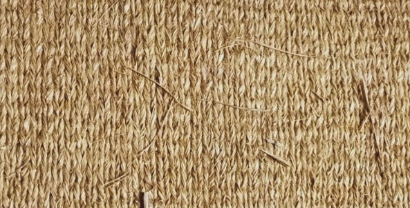

In the ancient town of Thasi—now known as Siddhipur—the ground tells stories. Here, sukul is not just a woven mat. It is a vessel of memory, prayer, tradition, and pride. Made from straw, but rooted in spirit, sukul has long been part of daily life—hosting rituals, gatherings, rest, and reflection.
"सुकुल भन्नेबित्तिकै सिद्दिपुर हो, सिद्दिपुर भनेको सुकुल हो।"
("To speak of sukul is to speak of Siddhipur; Siddhipur itself is defined by sukul.")
This simple craft is deeply woven into the identity of Thasi. Every mat is hand-crafted with care, using age-old techniques passed down through generations. It is more than just a product—it is a silent witness to the rhythms of life, tied to the soil, the homes, and the hearts of the people.
Even today, the tradition continues—quietly but purposefully. At the Siddhipur Community Learning Center (CLC), community leader Krishna Kumar Maharjan has taken a vital role in preserving this craft. Under his guidance, the CLC is not just a place of learning—it is a space where sukul weaving is taught, practiced, and honored. It connects young learners with old wisdom, supports community livelihoods, and links local craft to cultural buyers who understand its worth.
"मूल्यको कुरा गर्दा, यदि मानिसले यो शिल्पको महत्व बुझ्न सके, यसको कदर आफैँ बढ्छ।"
("When it comes to value, if people can truly understand this craft, its importance naturally grows.")
Through each weave, sukul tells a story—not just of straw and hand, but of heritage and belonging. It is Thasi’s soft strength, woven from memory, history, and the quiet determination to carry forward a way of life.
